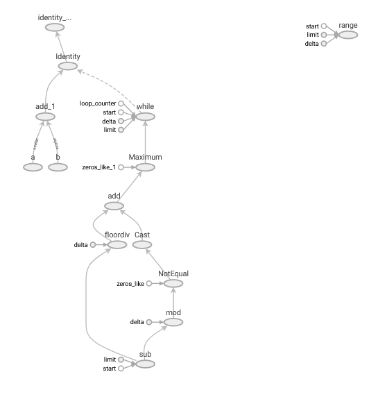
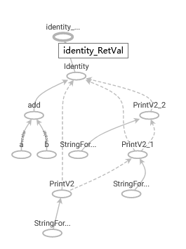

Autograph
Table of Contents
1 Autograph
1.1 先编译成静态图再执行
import tensorflow as tf import numpy as np @tf.function(autograph=True) def myadd(a,b): for i in tf.range(3): tf.print(i) print("tracing") return a + b
print("=== first") print(myadd(tf.constant("hello"), tf.constant("world"))) print("=== second") print(myadd(tf.constant("hello"), tf.constant("world")))
第一次执行时需要先编译成 static graph, 由于 tf.range 会被编译为 while tensor (见下文), 所以 "tracing" 只输出了一次.
第二次执行时不需要编译, 直接执行之前生成的 static graph, 所以不会再输出 "tracing", 因为 python 的 print 并不会转换为 static graph 中的某个节点, 但 tf.print 会以节点的形式存在于 graph 中, 所以每次都会打印出 0,1,2
= first
tracing
0
1
2
tf.Tensor(b'helloworld', shape=(), dtype=string)
= second
0
1
2
tf.Tensor(b'helloworld', shape=(), dtype=string)
1.2 如何编译
编译的过程是: 把函数做为普通的 python 函数执行一次, 执行过程中碰到 tf.xxx 则生成对应的 tensor 嵌入到 static graph 中
1.2.1 tf.range 对应 while tensor
import tensorflow as tf writer = tf.summary.create_file_writer("/tmp/tf/") tf.summary.trace_on(graph=True) @tf.function(autograph=True) def myadd(a,b): for i in tf.range(3): tf.print(i) print("tracing") return a + b myadd(tf.constant("hello"), tf.constant("world")) with writer.as_default(): tf.summary.trace_export(name = "autograph",step=0)
autograph 把 myadd 中的的 tf.xxx 转换为相应的 node, tf.range 对应 graph 中的 "while_loop" tensor
tracing 0 1 2

1.2.2 python range
import tensorflow as tf writer = tf.summary.create_file_writer("/tmp/tf/") tf.summary.trace_on(graph=True) @tf.function(autograph=True) def myadd(a,b): if True: for i in range(3): tf.print(i) print("tracing") return a + b myadd(tf.constant("hello"), tf.constant("world")) with writer.as_default(): tf.summary.trace_export(name = "autograph",step=0)
这里用 range 代替了 tf.range, 导致 graph 中生成了 3 个 PrintV2 tensor, 而不是一个 while_loop tensor
tracing tracing tracing 0 1 2

1.3 限制
- python 代码 (而非 tf api) 只在编译时才会起作用, 导致一些意料之外的结果, 所以应尽可能使用 tf api.
- 若参数包含非 tensor 类型, 则每次都调用都会导致重新编译, 因为参数可能导致不同的控制流, 而这些控制流的变化无法嵌入到 graph 中
data = [] @tf.function(autograph=True) def myadd(a,b, x): data.append(x) return a + b myadd(tf.constant("hello"), tf.constant("world"),1) print(data) myadd(tf.constant("hello"), tf.constant("world"),2) print(data)
[1] [1, 2]